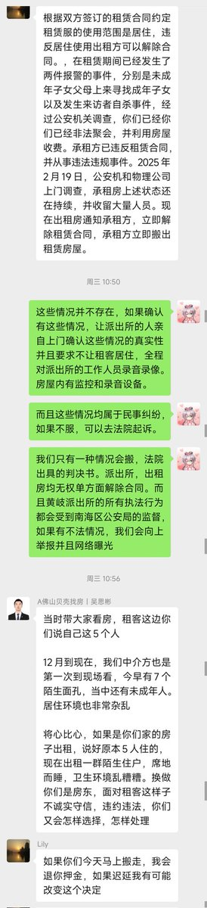
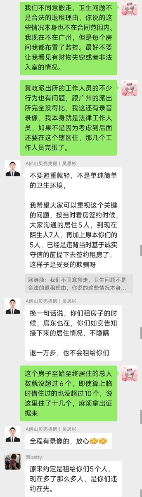
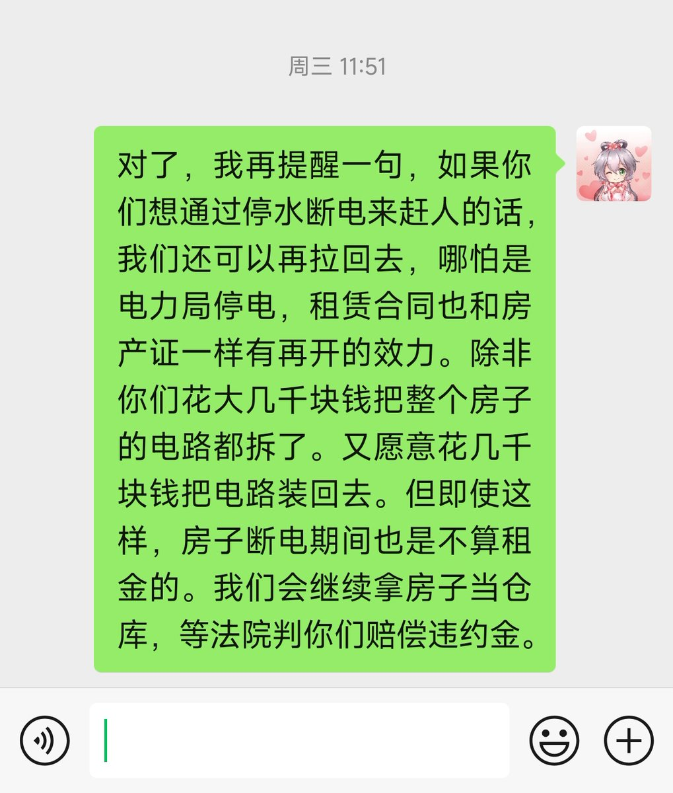
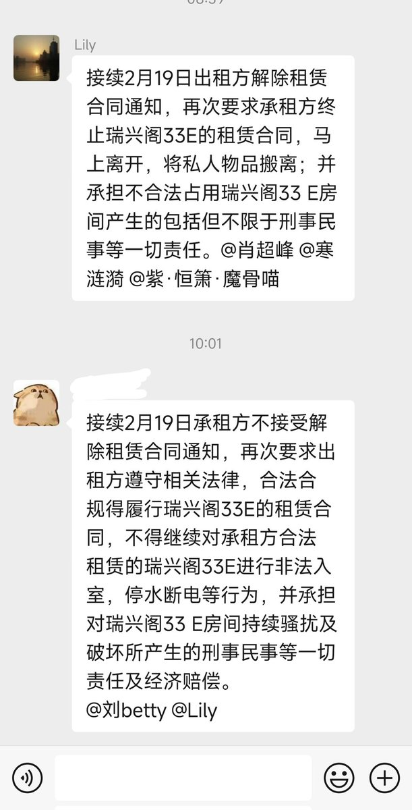

@Ym4Fourth 你不搬就行了，没人能拿你怎么办，该赔违约金的是房东而不是你，你拒绝搬走房东和派出所都没有权利强行赶你走。






发出来广州庇护所的某个拎不清自己的房东让大家乐呵乐呵。
人要清楚自己的定位，房东才是弱势群体，求租客搬走就要有求着的觉悟。
如果是一哭二闹三上吊，还愿意大笔大笔的赔钱，我还勉强考虑搬家。
强硬的态度只会让这个房东输得一塌涂地。 https://t.co/TGf1yrHOpg https://t.co/pVr8LXu4Lz
人要清楚自己的定位，房东才是弱势群体，求租客搬走就要有求着的觉悟。
如果是一哭二闹三上吊，还愿意大笔大笔的赔钱，我还勉强考虑搬家。
强硬的态度只会让这个房东输得一塌涂地。 https://t.co/TGf1yrHOpg https://t.co/pVr8LXu4Lz
哈哈房东看到我的朋友圈割手的图了...说...你割手，我不让你租了，你押金没了。这是我自身原因吗...为什么...房东啥也没干一下午就赚了1800...求收留吧...但是不能草...不能性骚扰....